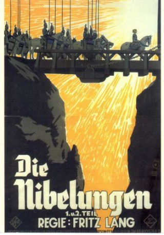

#4610 Die Nibelungen 2 - Kriemhilds Rache
Alternativ: Die Nibelungen: Kriemhilds Rache
 
 IMDB-Wertung: 7.9 / 10
IMDB-Wertung: 7.9 / 10  Metascore: 0
Metascore: 0 
After Siegfried's dead, Kriemhild marries Etzel, the King of the Huns. She gives birth to a child, and invites her brothers for a party. She tries to persuade Etzel and the other Huns, that they kill Hagen, the murderer of Siegfried, but he is protected by her brothers. A fierce battle begins to force her brothers to give Hagen to her.
Jahr: 1924
Dauer: 130 Minuten
FSK: 0
Land: Deutschland Studio: UFATonspuren:
Untertitel:
Auflösung: 1080p (1440x1080) Größe: 10076 MB
Genre: Drama, Abenteuer, Fantasy
Regisseur: Fritz Lang
Drehbuch: Bruce Chatwin
Soundtrack:
Darsteller:
- Margarete Schön als Kriemhild
- Gertrud Arnold als Königin Ute
- Bernhard Goetzke als Volker von Alzey
- Hans Adalbert Schlettow als Hagen Tronje
- Rudolf Klein-Rogge als König Etzel
- Georg John als Slaodel, sein Bruder
- Hanna Ralph als Brunhild - in der Rückblende , uncredited
- Theodor Loos als König Gunther
- Hans Carl Mueller als Gernot
- Erwin Biswanger als Giselher
- Hardy von Francois als Dankwart
- Yuri Yurovsky als Der Priester
- Iris Roberts als Der Edelknabe
- Hubert Heinrich als Werbel, der Spielmann
- Rudolf Rittner als Rüdiger von Bechlarn
- Annie Röttgen als Dietlind, seine Tochter
- Fritz Alberti als Dietrich von Bern
- Georg August Koch als Hildebrand
- Grete Berger als Hunnin
- Ernst Legal als
- Rose Lichtenstein als
Datei: X:\3-Trilogie(N-Z)\Nibelungen\Nibelungen 2 - Kriemhilds Rache, Die (1924, FSK0, 1440x1080).mkv seit 24.10.2016
Festplatte: HD Collection-3(N-Z)-6(A-Z)
 Es gibt insgesamt 8 Filme in der Gruppe '3-Trilogie(N-Z)\Nibelungen'
Es gibt insgesamt 8 Filme in der Gruppe '3-Trilogie(N-Z)\Nibelungen'